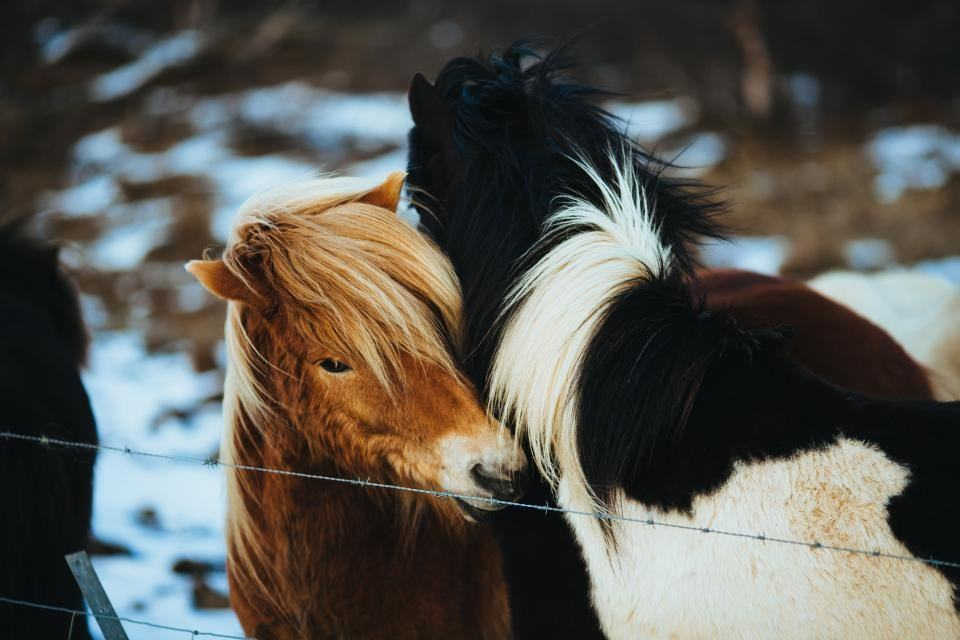
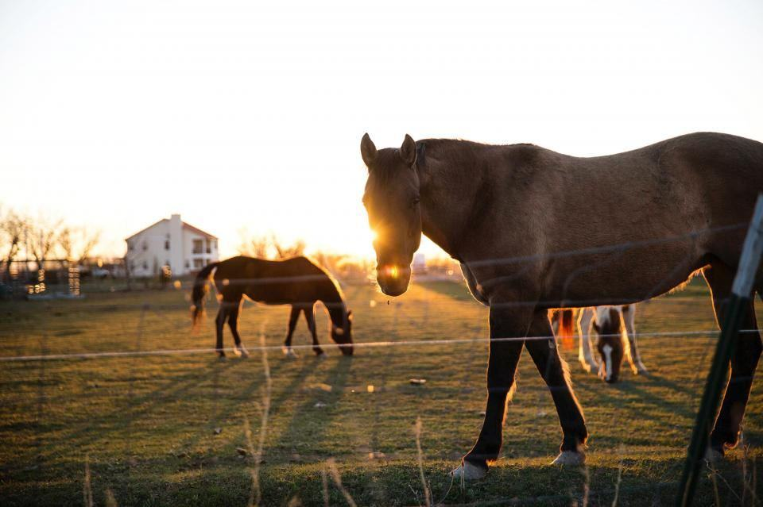

Tjänster
I dag är vi sex: fyra hovslagare, smeden Tore Jonsson som enbart arbetar vid städet och Ingrids son Albin som planerar rutterna. Ungefär två tredjedelar av hästarna vi skor är kallblod – i skogsbruk, i slädturism kring Åre, i körsällskap och på kallblodstravet i Östersund.

Skogsbruk med häst
Skogskörning ställer andra krav än ridning: hästen drar ett lass på flera hundra kilo genom kärr, stenar och snö. Vi smider skor med bred bana, kraftiga tåkappor och broddar som svetsas fast i stället för att skruvas.
Ett tjugotal hästföretag i länet har fasta tider hos oss före avverkningssäsongen i oktober.

Slädturism i fjällen
Från december till april kör turistföretagen kring Åre, Duved och Vemdalen släde varje dag. Hästarna går på packad snö, is och plogad väg, ibland samma dag.
Vi lägger vinterskorna i november och har en hovslagare stationerad i Järpen på fredagar under hela säsongen.

Kallblodstrav
Kallblodstravare är tyngre än varmblodiga och belastar hovarna annorlunda i sväng. Vi skor åt nio tränare runt Östersundstravet och följer startlistan när skorna ska bytas.
Aluminium fram och stål bak är vanligast, men vi provar oss fram efter varje häst.

Smedjan i ladan
Ässjan i Brunflo eldas med koks och används fyra dagar i veckan. Här smids skor till ardenner, shire och nordsvenskar med stora hovar, och här lagas stall- och skogsutrustning när det behövs.
Andra hovslagare i Norrland beställer skor av Tore – leveranstiden är normalt en vecka.
Från mall till säsongsstart
- 1

Albin lägger rutten
Du ringer eller sms:ar, och Albin föreslår en dag när någon av oss ändå kör förbi din by.
- 2

Mått och mallar
Vid första besöket mäter vi hovarna och sparar en pappersmall om hästen behöver handsmidda skor.
- 3

Smide och skoning
Färdiga skor anpassas varma på plats. Handsmidda skor gör Tore i förväg efter mallen.
- 4

Före säsongen
Vi ringer upp i september och oktober så att skog och släde är skodda innan säsongen börjar.
Gesäller, smed och heta arbeten
- Gesäller från WångenAlla fyra hovslagare har gesällbrev, två av dem från utbildningen på Wången.
- Smideskunnig smedTore Jonsson har arbetat som smed sedan 1985 och lär ut handsmide på länets folkhögskola.
- Heta arbeten vid ässjanAlla som arbetar vid ässja och gasol har giltigt certifikat för heta arbeten.
- Försäkrade även i skogenFörsäkring som täcker skador på häst och egendom vid skoning, även i skogen.